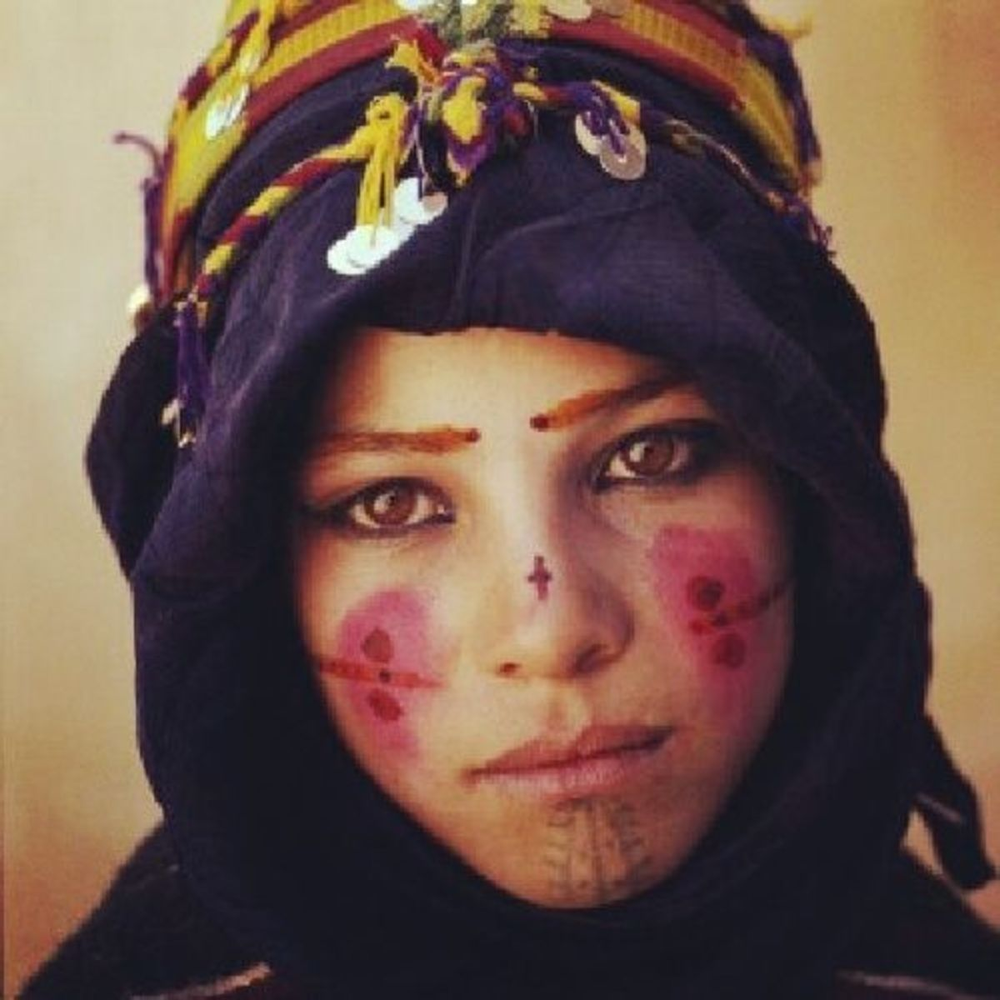

The Palestinians are a people with a long history and deep roots in their land and traditions. For thousands of
years, Palestine has been a focal point of major historical events. Palestine belongs to the famed Fertile
Crescent of human antiquity, home to some of the first agricultural communities in the world.
“I decided to go back to the farming methods of my ancestors and opened my own organic farm. Safe organic
farming is all about the proper management of water, using compost, and most of all, treating the soil as a
living organism. With my strawberries, I am trying to bring back the old days and underscore the need to
alter the farming culture here away from fertilizers. Every farmer should make the decision to organically
farm.”- Ayman, farmer (Beit Lahia, Gaza)
In the West Bank, East Jerusalem and Gaza, many Palestinians are refugees from villages, towns and cities that
became Israel. Some of these displaced live in refugee camps, while others live in towns and cities across the
Palestinian territories. Within present-day Israel, the largest Palestinian populations are in Galilee in the
north, particularly the city of Nazareth, and in East Jerusalem.
A quintessential West Bank scene — terraced hills and olive trees.
Although most Palestinians traditionally lived in villages with large extended
families in close proximity, in
urban areas Palestinians live in smaller family homes. However, even in cities it remains a very family-oriented
culture. Extended family gatherings with meals are common — many families may participate in such get-togethers
every week. Grandparents traditionally live with the family of the eldest son.
Extended family networks offer Palestinian families the social safety net that is not provided by governments.
Whether helping a student with tuition, ensuring a relative is well-cared for in retirement, or supporting a
family member who is unemployed, facing medical expenses, or living with disabilities, extended families are the
backbone of Palestinian welfare. Often Palestinians in the diaspora send vital financial support for family
members back in Palestine.
Many regions of Palestine have distinctive arts and crafts for which they are well known. Olive-wood carving,
for instance, is closely associated with Bethlehem, where artisans can sell to the religious tourists the area
has long attracted. Nablus, meanwhile, is traditionally famous for its soap production, while Hebron is renowned
for glass blowing and ceramics. And Gaza City is known for the production of pottery and rugs.
Clothing
Among both womens and mens traditional clothing in Palestine there was considerable variation among social
classes, and with distinct fashions between urban, rural and nomadic Bedouin populations. Traditional clothing
was usually made of cotton or linen. Different clothing items include:
Elderly woman sewing Tatreez

Vintage photo of a girl with facial tattoos
Women Applying henna for a special occation
Sweet Pastry
01
Kunafa

Rice Flour

Sugar
Kunāfah consists of two crunchy layers of shredded and buttered kataifi or knefe dough, filled with a
luscious cheese cream that's often flavored with orange zest and cardamom, then drenched in a sugar syrup
infused with lemon juice and orange blossom water.
Dumplings
02
Shishbarak
Flour

Garlic

Coriander

Olive Oil
This combination of meat-stuffed dumplings and yogurt is common in Levantine cuisine. The dish consists of tiny dumplings—believed to have originated in Iran under the name joshpara—that are filled with a combination of meat and onions.